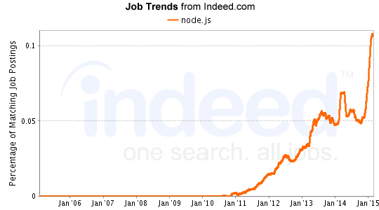

Node.js asusta!
Una suave introducción
Creado por Fabiano PS abril 2015
Zenhub / AxiomZen
presentador

- desarrollando software 5+ años
- <3 OPEN WEB
- 3+ años en Javascript
quién usa?
Zenhub, Walmart, eBay
..Microsoft, Yahoo, Linkedin
..Uber, Medium +1000s more
quién más?
Descargas utilizando el gestor oficial del paquete npm:

Y es por eso que algunos llaman Node.js un cáncer!
hay pega?
10% de todos los empleos en Indeed
quién es?
Node.js es un runtime para Javascript, de código abierto, multiplataforma para aplicaciones de servidor y la creación de software en redes
Actualmente es popular para la creación de servidores web
API, sitio web, webapp, en tiempo real, &+

cuándo?
- 2009: nació como un hack sobre el motor de Chrome (V8)
- patrocinado y marca registrada por Joyent
- excelentes API de bajo nivel
- destacado gestor de paquetes
- comunidad inclusiva
hoy en día

Parte considerable de la comunidad central de Node.js forkeo el proyecto principal de Joyent, y ahora está publicando una rama paralela con el nombre de IO.js
Liberan una nueva versión cada semana por lo que es posiblemente el proyecto más rápida evolución en la historia reciente de código abierto - aunque mi humilde opinión es demasiado.
¿ usarlo ?
Recomendado usar cuando:
- ok/gusta Javascript
- Ideas de prototipos
- iterate fast
- aplicaciones en tiempo real
- API móvil o web
- isomorphico web
¿ no usarlo ?
(sin reglas estrictas)
- odia JavaScript
- un sistema de alta fidelidad (banco, nave espacial, satélite)
- Cuando usted puede permitirse el lujo de centrarse sólo backend
- dependencia de las bibliotecas exclusivos para otro idioma (pocas hoy día)
Como se ve?
ejemplo de eco HTTP
var express = require('express')
var app = express()
app.get('*', echo);
function echo(req,res){
res.send({
path: req.path,
query: req.query
})
}
app.listen(3000);
console.log('escuchando en puerta 3000');
How to start?
- Aprender los conceptos básicos en nodejs.org
- ¿ Crear una API ? Mira Koa.js
- ¿ Crear app tiempo real ? Mira Socket.io
- ¿ Reírse ? Check NodeReactions
- Todo lo demás, Google es tu amigo!